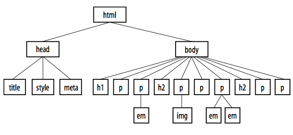

Before start Start day 1 [1.1] [1.2] [1.3] [1.4] [1.5] Start day 2 [2.1] [2.2] [2.3] [2.4] [2.5] [2.6] [2.7] Start day 3 [3.1] [3.2] [3.3] [3.4] [3.5] [3.6]
Document object model. The thing that represents our user-interface objects and structures the relation between those objects. For most pages the window is the top object in which a diversity of other objects are represented. On the toplevel there are direct dependent always available objects like: history, console and geolocation. But of course there are a possible wide variaty of other elements added to a page, like all form with elements and buttons, achors, list, table, divs and links. The structure is hierachical. All objects apart from top object have one parent object.
An example html DOM tree
These objects can be defined in HTML directly or dynamically added to a page. These object can describe the looks and behaviour by setting there properties and/or attributes.
Sharing results
One thing to remember about the DOM: it is slow. Javascript has gained an enormous performance boost. But only lately there seems to be more and more attention on the speed of the DOM. Actually a reason why frameworks like React.js gain a huge performance gain. In React.js a copy of the DOM is used for most of the DOM oriented manipulation. This copy than only interfaces with the 'real' DOM reulting is (far) more efficient updates. Remember that working with the DOM can have serious drawback on performance. It is a good practice to do performance based test around (repetitive) DOM like manipulations.
Sharing results